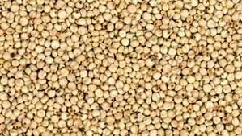
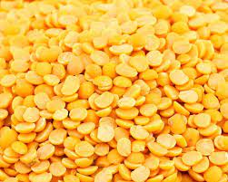

We are a jowar and Toordal Wholesalers

Jowar
Savor the essence of Kalaburagi in every bite with our premium Jowar. Grown on our local farms, it brings a unique blend of freshness and authenticity to your kitchen, ensuring a healthy and flavorful dining experience.

Toordal
Discover the rich taste of Kalaburagi with our superior Toor Dal. Cultivated in the region's fertile soil, it not only adds a delicious touch to your dishes but also brings the nutritional benefits of our carefully nurtured legumes.